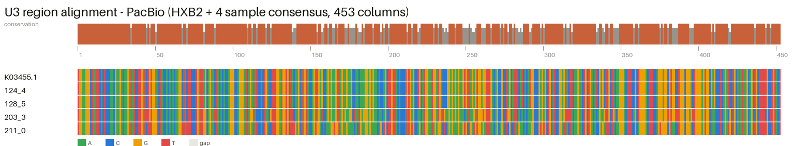

Provirus recovered from every read (0% residual N). Cores are variable and partial (1.8–6.0 kb, not full 9 kb) — SMRTcap junction reads carry a large host fraction, so downstream assembly must tile them per sample.
Full-length consensus for all 4 samples — but because the cores are partial, uncovered positions are filled from HXB2, so a "valid" length here is partly reference-derived. Per-sample U3 read depth is the honest metric. hifiasm comparison pending its install.
--localpair --maxiterate 1000).
MAFFT L-INS-i is the pick — most accurate for divergent HIV and fastest here. Unlike the Illumina U3, the PacBio consensus set shows real inter-sample variation where reads covered.
--subtype A1.The two-stage filter is viable. HIVSeqinR (Rakai A1/D-validated) is the primary caller once its one-time primer config is supplied; HIVIntact is a fast cross-check but subtype-B-biased, so read its A1/D calls with caution.
-m MFP).jpHMM + IQ-TREE 2 works well; jpHMM dominates runtime (~10 min/sample ×4) vs the ML tree's ~2 s — the step to parallelise at cohort scale.
| Transcription factor | FIMO | TFBSTools |
|---|---|---|
| NF-κB p65 (RELA) | 9 | 19 |
| NF-κB p50 (NFKB1) | 2 | 2 |
| SP1 | 5 | 15 |
| NFAT | 0 | 14 |
| AP-1 (FOS::JUN) | 0 | 6 |
| TBP | 0 | 31 |
| G-quadruplex | control | subset |
|---|---|---|
| gquad | 3 | 15 |
| pqsfinder | 1 | 5 |
TFBSTools recovered all 6 target TFs; FIMO's strict 1e-4 kept the highest-confidence (p65, SP1, p50). G4: gquad 15 / pqsfinder 5 putative sites — consistent G-quadruplex potential in the U3. All passed the HXB2 control.